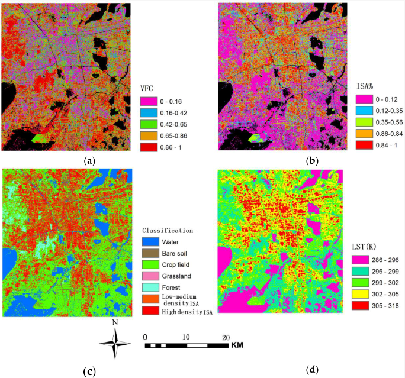
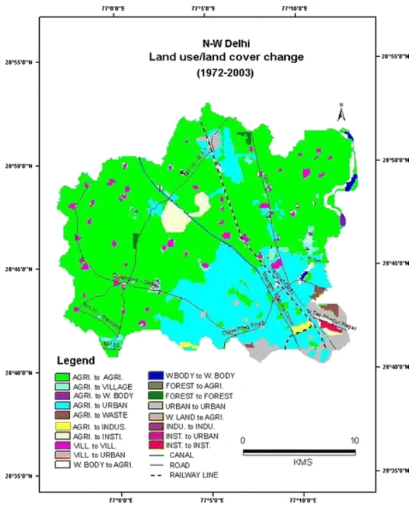

7 Week 7-Classification 2
7.1 Summary
In the realm of remote sensing, accurately classifying Earth observation (EO) images is paramount. Traditional pixel-based classification methods, while useful, often overlook the spatial relationship between pixels, known as adjacency. This oversight can be problematic due to the geographic principle that spatial entities tend to be more similar to their immediate neighbors than to those further away. It’s also rare for a pixel to be completely homogenous, meaning it typically comprises a mixture of different land covers. To address these challenges, this week we delve into Object-Based Image Analysis (OBIA) and sub-pixel analysis, which offer a more refined approach to classification tasks.
7.1.1 Object-Based Image Analysis (OBIA)
OBIA represents a shift from pixel to object-level analysis. Rather than analyzing each pixel individually, OBIA groups pixels into superpixels or supercells based on their spectral homogeneity. This process is adeptly handled by the Simple Linear Iterative Clustering (SLIC) algorithm, which creates these superpixels by:
- Initializing centroids within the image based on a predefined number of superpixels.
- Iteratively clustering pixels based on their spectral similarity and proximity to centroids.
- Adjusting centroids and boundaries to minimize intra-object variance and maximize inter-object distinction.
The process relies on two key hyperparameters: the distance between initial centroids (s) and the compactness factor (m), which balances color similarity and proximity. The output is a segmented image that better reflects the true spatial structure of the observed area.
7.1.2 Sub-Pixel Analysis
Where OBIA groups pixels, sub-pixel analysis goes a level deeper by examining the composition within individual pixels. Recognizing that pixels often contain a mix of land cover types, sub-pixel analysis estimates the proportion of each cover type present. Spectral Mixture Analysis (SMA) is commonly employed for this purpose, using spectrally pure endmembers as references to deconstruct a pixel’s spectral signature into its constituent parts.
The methodology can be outlined as follows:
- Identify spectrally pure endmembers that represent distinct land cover types.
- Apply a matrix-based approach to solve for the proportions of each land cover type within the pixel, often visualized through a V-I-S (Vegetation-Impervious surface-Soil) model.
7.1.3 Accuracy Assessment
An integral part of these techniques is accuracy assessment. New datasets are used to validate classification outputs, with strategies such as spatial cross-validation enhancing the reliability of the results. Spatial cross-validation partitions the data into spatially disjoint sets, avoiding the pitfall of training and testing the model on autocorrelated samples. This method ensures that the model’s performance is tested on geographically independent data points.
7.1.4 Conclusion
OBIA and sub-pixel analysis present a substantial improvement over traditional methods, acknowledging the complex nature of spatial data. These techniques not only consider the homogeneity within pixels but also the relatedness of adjacent areas, thus creating more accurate and geographically sensible classification models.
7.2 Application
7.2.1 part 1
In the past few weeks, I have been paying close attention to Ahmedabad in India because of its high temperature hazards. In the application of this chapter, I discovered another way to mitigate the dangers of heat. Kai Liu and colleagues conducted a study on urban surface energy fluxes in Suzhou, China, using Sub-Pixel Analysis via Multiple Endmember Spectral Mixture Analysis (MESMA) to assess the detailed composition of urban land cover. This method allowed for the detailed assessment of vegetation fractional coverage (VFC) and the percentage of impervious surface area (ISA%) within each pixel of satellite imagery, beyond the traditional one land cover type per pixel assumption.
This are maps of land coverage, LCTs classification and LCT at 1040 LT, derived from 30-m LANDSAT-5 TM acquired on 24, May 2010. (a) Vegetation fraction coverage; (b) impervious surface coverage; (c) LCT classification; (d) land surface temperature.

The research results revealed two key findings:
Cooling Effect of Vegetation: Areas with higher vegetation fractional coverage (VFC) showed a cooling effect, indicated by higher latent heat flux (LE) and lower land surface temperatures (LST). This underscores the importance of vegetation in urban areas for mitigating heat through evapotranspiration.
Heat Retention in Urbanized Areas: Urbanized zones with a higher percentage of impervious surface area (ISA%) exhibited increased sensible heat flux (H) and higher LST, indicating that these areas absorb and retain more heat compared to their less urbanized counterparts.
These findings highlight the significant impact of urban land cover composition on the thermal environment, emphasizing the need for integrating green spaces in urban planning to combat the urban heat island effect and promote sustainable urban living.
7.2.2 part 2
However, except Ahmedabad, there is another city in India, Delhi, which is also facing problems such as land degradation and desertification due to its geographical location and urbanization pressure.
Atiqur Rahman and his team leveraged remote sensing data and Geographic Information System (GIS) techniques to track land use and land cover changes in the North-West District of Delhi from 1972 to 2003. They combined high-resolution ASTER images with historical Survey of India Toposheets, using digitization, geo-referencing, and image classification methods, including supervised classification with the Maximum Likelihood Classifier. Through change detection analysis, they documented significant shifts from agricultural land to urban areas.The study validated the classification results against ground truth data to ensure accuracy, and integrated the findings into GIS for enhanced analysis and visualization. The research results are as follows.

This picture shows:
A significant reduction in agricultural land, from 92.06% in 1972 to 64.71% in 2003.
An increase in built-up areas from 6.31% to 34% over the same period, indicating urban expansion.
Urban growth has primarily occurred at the expense of agricultural lands.
Population growth due to migration from smaller cities and rural areas of Delhi is a primary driver of these land use changes.
7.3 Reflection
This week I learned two more in-depth and more refined classification methods. These contents include parts that I am familiar with. For example, I have been exposed to the concept of spatial autocorrelation in the CASA0005 course, but the overall concept is still a bit obscure to me. Difficult to understand. So I looked for relevant papers to read, and was pleasantly surprised to find that this new classification method plays a very important role in classifying land coverage, and I got a new method of mitigating thermal hazards from the paper, which is consistent with my policy in the fourth week. Some of the contents echoed, giving me a sense of integrated knowledge. It can also be seen that overheating of the earth’s surface is a global problem affecting society, economy and environment. As a result, every government is trying to cool down their own land. This requires accurate identification of land types. Object-Based Image Analysis (OBIA) and Sub-Pixel Analysis are both good methods for identifying land types.